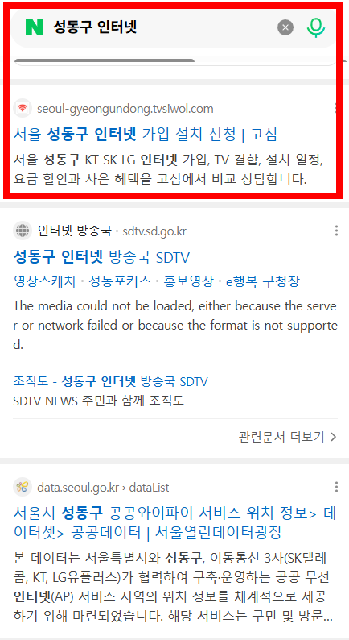
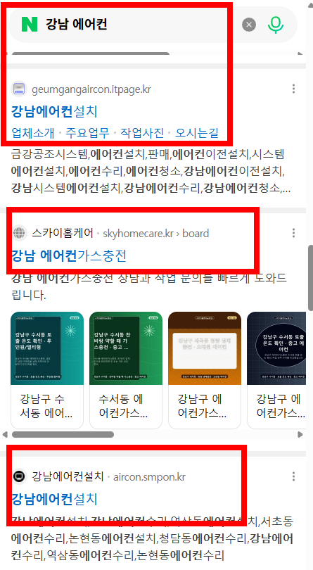

canonical 자동 검증
한 경쟁사는 페이지마다 canonical 태그가 3중으로 겹쳐 있었습니다. 하위 페이지 색인이 통째로 빨려 들어가는 치명 결함인데, 모니터링이 없으면 발견조차 못 합니다. 저는 발행할 때마다 자동으로 검증합니다.
지역 선점형 SEO 홈페이지
예쁜 홈페이지만으로는 지역 손님의 검색을 가져올 수 없습니다.
지역×업종×서비스 검색까지 설계한 ‘검색되는 홈페이지’를 만듭니다.
필요한 것은 또 하나의 예쁜 홈페이지가 아니라
검색되는 구조입니다.
‘서울 하수구’만 검색하는 게 아닙니다. 손님은 자기 동네가 나올 때까지 검색어를 좁힙니다.
전국을 홈페이지 한 페이지에 적어두는 것과, 이 검색어 하나하나에 대응하는 페이지를 갖는 것은 전혀 다른 일입니다. 우리는 시·군·구, 필요하면 동 단위까지 만듭니다.
| 일반 홈페이지 | 지역 노출형 홈페이지 |
|---|---|
| 회사 소개 중심 | 손님의 검색어 중심 |
| 메뉴 몇 개 | 지역×업종×서비스 구조 |
| 디자인이 목표 | 발견되는 것이 목표 |
| 만들면 끝 | 지역·콘텐츠로 계속 확장 |
| 회사가 하고 싶은 말 | 손님이 검색하는 말 |
홈페이지 몇 장을 만드는 게 아니라
검색되는 온라인 영업 자산을 만듭니다.
실제 운영 사이트 — 업종을 바꿔도 재현됩니다
에어컨, 인터넷 가입 상담 등 여러 업종의 사업을 직접 운영하면서, 홈페이지를 처음부터 지역 검색 구조로 설계해왔습니다. 에어컨 사업은 시작 1년 만에 광고 없이 지역 검색으로 문의가 들어오는 구조가 됐고, 같은 방식이 다른 업종에서도 그대로 재현되고 있습니다.


한 업종의 우연이 아니라, 업종이 달라도 재현되는 구조입니다. 더 많은 검색 결과는 상담에서 직접 보여드립니다.
잘되는 경쟁 사이트 두 곳의 사이트맵 전체를 내려받아 분석하고 설계했습니다. 아래는 그 실측 결과입니다.
한 경쟁사는 페이지마다 canonical 태그가 3중으로 겹쳐 있었습니다. 하위 페이지 색인이 통째로 빨려 들어가는 치명 결함인데, 모니터링이 없으면 발견조차 못 합니다. 저는 발행할 때마다 자동으로 검증합니다.
6만 페이지짜리 경쟁사도 구조화 데이터는 사실상 비어 있었습니다. LocalBusiness·Service·FAQ·브레드크럼 4종을 모든 페이지에 기본으로 심습니다. 네이버·구글은 물론, AI 검색이 읽어가는 층입니다.
수천 장을 한 번에 올리면 색인 거부가 옵니다. 첫 3~6개월에 걸쳐 나눠 발행하며 정착시킵니다. 페이지 수보다 페이지의 실제 가치를 보는 구글 정책 기준에 맞춘 설계입니다.
시도→시군구→동으로 내려가고, 부모·자식·형제 페이지가 서로 밀어주는 구조. 6만 페이지 경쟁사가 실제로 증명한 방식을 결함 없이 구현합니다.
지역×업종×서비스 매핑표부터 확정합니다. 어떤 페이지를 몇 장, 어떤 주소로 만들지 코드보다 먼저 정합니다.
구조화 데이터 4종과 내부링크를 포함해 페이지를 만듭니다.
한 번에 올리지 않고 나눠 발행하며 색인을 정착시킵니다. canonical·색인 상태를 계속 검증합니다.
색인 수와 검색 유입을 추적해 월 리포트로 보고합니다.
구축 후 첫 몇 달은 단계 발행＋색인 정착 기간이라 관리가 사실상 필수입니다.
이후는 모니터링·리포트 중심의 선택 관리입니다. 그래서 6개월까지 구축비에 포함했습니다.
검색 기반 홈페이지의 시작
200만원
내 지역에서 발견되는 홈페이지
500만원
전국을 하나의 검색 자산으로
별도 견적
구축한 지역 페이지가 6개월 안에 네이버·구글 검색에 등재(색인)되지 않으면 구축비 전액을 환불합니다. 색인 방어가 이 서비스의 핵심 설계라서 걸 수 있는 약속입니다.
부가세 별도 · 프리미엄은 지역·확장 규모에 따라 견적 · 7개월 차부터의 월 관리(모니터링·리포트 중심)는 별도 협의, 선택 사항입니다.
새로 시작하는 분만을 위한 서비스가 아닙니다. 홈페이지는 있는데 —
기존 홈페이지의 검색 구조를 분석해 지역 검색 중심으로 리빌딩할 수 있습니다. 새로 만드는 것보다 리빌딩이 나은 경우도 많으니, 진단부터 받아보세요.
검색 순위는 여러 요소로 결정되기 때문에 특정 순위를 무조건 보장한다고 말하지 않습니다. 대신 손님이 실제로 검색하는 지역·업종·서비스 검색어를 분석하고, 거기에 맞는 페이지 구조와 콘텐츠를 설계합니다. 실제 성과는 상담에서 검색 결과와 함께 보여드립니다.
일반 홈페이지는 만들고 끝나지만, 이 홈페이지는 지역마다 검색 입구를 만드는 작업입니다. 페이지 몇 장의 제작비가 아니라 지역별 검색 자산의 구축비라서 작업 범위 자체가 다릅니다.
수백~수천 장을 한 번에 올리면 검색엔진이 색인을 거부할 위험이 큽니다. 그래서 첫 3~6개월에 걸쳐 나눠 발행하며 색인을 정착시킵니다. 구축비에 이 기간의 관리가 포함된 이유입니다.
구글 정책의 기준은 페이지 수가 아니라 페이지의 실제 사용자 가치입니다. 페이지마다 지역 맞춤 내용과 구조화 데이터를 갖추고, 단계 발행으로 정착시키는 색인 방어 설계가 이 서비스의 핵심입니다.
네, 기준은 명확합니다. 구축한 지역 페이지가 6개월 안에 네이버·구글 검색에 등재(색인)되지 않으면 구축비 전액을 환불합니다. 특정 순위 도달은 환불 기준이 아니지만, ‘검색에 존재하게 만드는 것’은 저희가 통제하고 책임지는 영역이라 약속할 수 있습니다. 상세 조건은 계약서에 명시합니다.
가능합니다. 기존 홈페이지의 검색 구조를 먼저 분석하고, 지역 검색 중심으로 리빌딩이 필요한지부터 진단해드립니다. 새로 만드는 것보다 리빌딩이 나은 경우도 많습니다.
구조 설계와 구축에 2~4주, 이후 단계 발행과 색인 정착에 3~6개월이 걸립니다. 검색 노출은 통상 발행 후 2주 안팎부터 시작됩니다.
업종과 활동 지역만 카톡으로 알려주세요.
어떤 지역 검색어를 가져올 수 있는지, 무엇을 보완해야 하는지
무료로 진단해드립니다.
전화가 편하시면 010-7614-1536